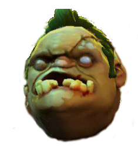
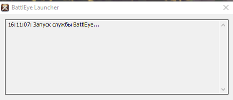
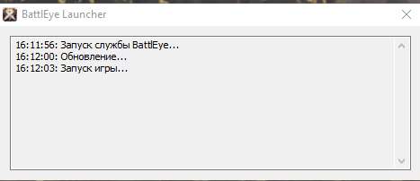
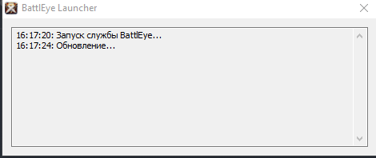
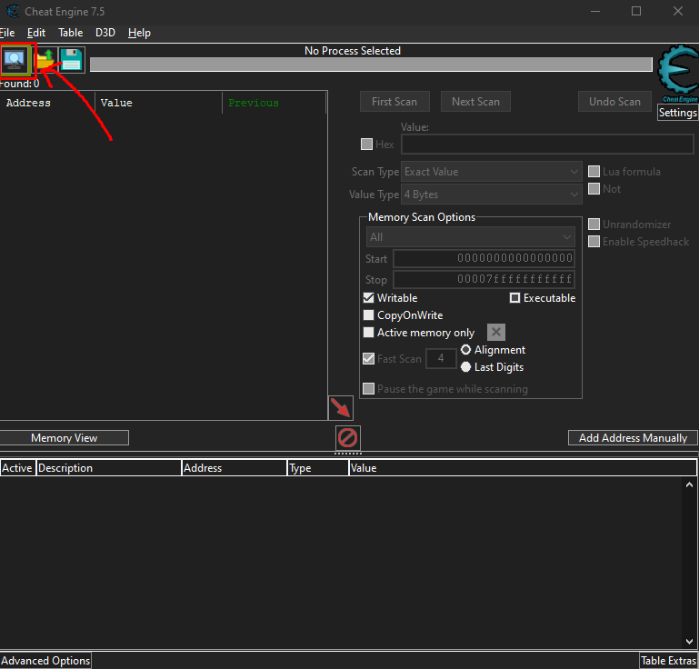
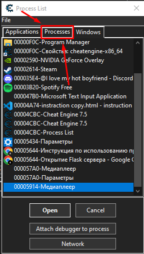

Инструкция по использованию программы
Обновления
04.02.2025
- Исправлен плеер.
- Улучшена оптимизация приложения.
- Картель вызван.
1. Запуск программы
Скачайте архив с программой по указанно ссылке: BebraTool By Lfey
Установите программу Cheat Engine (Используется для просмотра значений в подземелье): Download Cheat Engine
Запустите исполняемый файл программы ОТ ИМЕНИ АДМИНИСТАТОРА по дирректории dist/BebraTool_by_Lfey.exe.

2. Основные функции
Программа предназначена для работы с игрой Albion Online и включает в себя:
- Автоматическое отключение античита (Turn off anti-cheat).
- Проверка подземелий в игре (Check the dungeon).
- Завершение работы процесса BEService (Complete BEService).
3. Настройки путей к программам
Перед использованием автоматизации необходимо указать пути к следующим программам. Для удобства создайте ярлыки к каждому из файлов и указывайте путь на ярлыки:
- Path to Albion BE – путь к файлу BEService.exe.
- Path to Albion Online – путь к исполняемому файлу игры Albion Online.
- Path to Cheat Engine – путь к программе Cheat Engine.
- Stop delay in (sec) – задержка перед остановкой античита. Настраивается вручную в программе при помощи пользунком, в зависимости от мощности ПК. Оптимальные значения - от 1 до 4.
- Примеры задержек:
-
1. Слишком маленькая(Не даст запустится без античита):

-
2. Слишком большая(Античит успел загрузится):

-
3. Правильная задержка(Альбион не увидит отсутвия античита):

4. Музыкальный плеер
Программа включает встроенный музыкальный плеер:
- Добавление треков – кнопка "✚" позволяет выбрать файлы.
- Воспроизведение/пауза – кнопка "⏯".
- Переключение треков – кнопки "⏮" (предыдущий) и "⏭" (следующий).
- Регулировка громкости – слайдер "Music volume".
5. Запуск автоматизированных процессов
Для использования автоматизации необходимо:
- Указать корректные пути к файлам.
- Нажать соответствующую кнопку для запуска:
- Turn off anti-cheat – отключает античит.
-
Check the dungeon – запускает процесс проверки подземелий.
- Перед использованием функции Check the dungeon необходимо выполнить следующие действия:
-
1. Использовать именно
cheatengine-x86_64.exe, который можно найти в папке Cheat Engine 7.5 (см. скриншот):
-
2. Предварительно запустите выбранный Cheat Engine и выполните следующие действия:
-
2.1 В открытом Cheat Engine нажмите на кнопку "Select a process to open" (см. скриншот):

-
2.2 В появившемся новом окне "Process List" переключитесь с вкладки "Windows" на вкладку "Processes" и нажмите кнопку "Cancel". Это важно для использования программы! (см. скриншот):

-
2.1 В открытом Cheat Engine нажмите на кнопку "Select a process to open" (см. скриншот):
- Нажимать данную кнопку нужно непосредственно во время нахождения в данже с выключенным античитом.
- После нажатия кнопки не двигайте мышкой и не вводите данные с клавиатуры до появления окна памяти Cheat Engine (процесс занимает 3-4 секунды).
-
После выполнения всех действий закройте все окна Albion Online и Cheat Engine. В папке рядом с
dist/BebraTool_by_Lfey.exeпоявится каталог Check the dungeon screenshots, содержащий скриншоты значений подземелья.
-
Complete BEService – завершает процесс BEService.
- Нужно нажимать после каждого использования функции Turn off anti-cheat.
- Внимание! Не нажимайте эту кнопку слишком часто в секунду – это может привести к сбою системы.
- Дождаться завершения процесса, после чего программа отобразит результат.
6. Завершение работы
Для выхода из программы закройте окно вручную или используйте команду "Выход".
- Все изменения в конфигурации сохранятся.
- Музыкальный плеер будет остановлен.